Unidad 2 - Programación estructurada. Estructuras de control y repetición.
| Fecha | Versión | Descripción |
|---|---|---|
| 14/09/2021 | 1.0.0 | Versión inicial |
| 27/09/2021 | 1.0.1 | Corrección de erratas |
| 05/10/2021 | 1.0.2 | Se añade el tratamiento de String |
| 08/10/2021 | 1.0.3 | Corrección de erratas en ejemplos de recorridos. Implementación en Java de ejemplos que faltaban. |
| 16/09/2025 | 1.1.0 | Versión revisada |
1 Introducción: Construyendo programas sólidos
En esta unidad vamos a sentar las bases para crear programas que no solo funcionen, sino que sean claros, sencillos de mantener y fáciles de ampliar. Para ello, nos apoyaremos en dos pilares fundamentales: la Programación Modular y la Programación Estructurada.
2 Programación Modular: Construyendo con piezas de LEGO
Imagina que quieres construir un castillo de LEGO. No empiezas uniendo piezas al azar, ¿verdad? Lo más probable es que construyas primero las torres, luego las murallas, el puente... y finalmente lo unes todo.
La programación modular aplica exactamente esa idea: consiste en dividir un programa grande y complejo en partes más pequeñas e independientes, llamadas módulos.
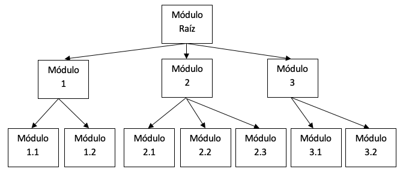
Un módulo es un fragmento de código que resuelve una parte muy concreta del problema. Cada módulo se puede programar y probar por separado, como si fuera una pieza de LEGO.
Esta técnica, también conocida como diseño Top-Down (de lo general a lo particular), nos aporta enormes ventajas:
- Claridad: Es más fácil entender un programa dividido en partes lógicas.
- Reutilización: Un mismo módulo (una torre de LEGO) puede usarse en diferentes castillos.
- Facilidad de depuración: Si una torre se cae, solo tienes que revisar esa pieza, no el castillo entero.
- Trabajo en equipo: Diferentes programadores pueden trabajar en distintos módulos a la vez.
3 Programación Estructurada: Las reglas de tráfico del código
Si la programación modular nos dice "divide y vencerás", la programación estructurada nos dice cómo construir cada una de esas divisiones.
Se basa en el famoso Teorema de la Estructura, que demuestra algo asombroso: cualquier programa, por complejo que sea, puede construirse usando únicamente tres tipos de estructuras de control. Piénsalo como las reglas de tráfico del código:
- Estructura Secuencial (una calle de sentido único): Las instrucciones se ejecutan una detrás de otra, en orden.
- Estructura Condicional (una bifurcación): El programa llega a un cruce y debe decidir qué camino tomar en función de una condición (
if-else). - Estructura Repetitiva (una rotonda): El programa ejecuta un bloque de código una y otra vez hasta que se cumple una condición para salir (
while,for).
Estas tres estructuras son los únicos ladrillos que necesitamos para construir cualquier algoritmo.
El Teorema de la estructura fue formulado por Bohn y Jacopini y dice así: “Todo programa propio, es decir, con un solo punto de entrada y un solo punto de salida, puede ser escrito utilizando únicamente tres tipos de estructuras de control: Estructura secuencial, condicional y repetitiva”
4 El Algoritmo: El plano de nuestra construcción
Recordemos que un algoritmo es el plano detallado para resolver un problema, una serie de pasos claros y finitos. Para representar estos planos, usaremos dos herramientas:
- Diagrama de flujo: Una representación gráfica con símbolos y flechas. Muy visual.
- Pseudocódigo: Un lenguaje intermedio, a medio camino entre el lenguaje humano y el código, que nos permite centrarnos en la lógica sin preocuparnos por la sintaxis estricta.
Un buen algoritmo debe ser sencillo y eficiente (usar el mínimo tiempo y memoria posibles).
Los elementos que tiene un algoritmo son:
- Instrucciones
- De entrada
- De salida
- De asignación
- Estructuras de control
- Bifurcaciones
- Repeticiones
5 Elementos de un algoritmo
5.1 Inicio y Fin
Todo algoritmo tiene un punto de partida y un final claros. Al menos existirán estos bloques:
- NOMBRE DEL ALGORITMO. El nombre con el que lo bautizamos para reconocer su propósito.
- INCIO. Punto de entrada del algoritmo.
- FIN. Finalización del algoritmo.
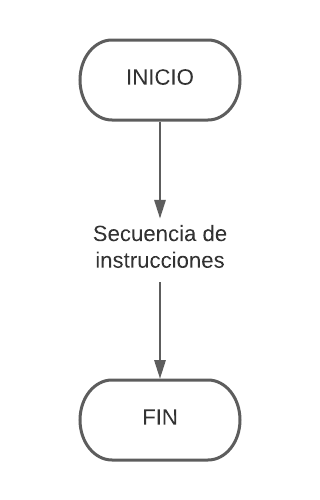
- Pseudocódigo: Usamos las palabras
ALGORITMO Nombre,INICIOyFIN. - Java: Usamos las llaves
{}para delimitar los bloques de código, como el inicio y fin de una clase o de un método.
public class HolaMundo { // INICIO de la clase
public static void main(String[] args) { // INICIO del método principal
System.out.println("Hola Mundo");
} // FIN del método principal
} // FIN de la clase
5.2 Instrucciones de asignación
Una asignación consiste en guardar un valor en una variable. Su representación sería en un rectángulo.
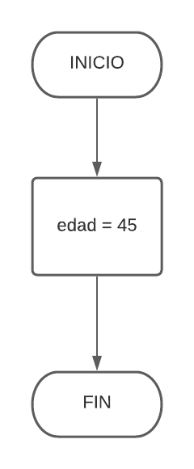
En pseudocódigo, definiremos las variables y constantes en bloques VAR y CONST antes del INICIO.
- CONSTANTES: Su valor no cambia. Por convenio, en mayúsculas.
- VARIABLES: Su valor puede cambiar.
Ejemplo de declaración en pseudocódigo:
ALGORITMO EjemploTipos
CONST
REAL PI = 3.1416
VAR
ENTERO edad = 0
CADENA nombre = " "
BOOLEANO esAlumno = VERDADERO
INICIO
// ... cuerpo del algoritmo
FIN
5.3 Instrucciones de Entrada y Salida
Son la forma en que nuestro programa se comunica con el exterior (normalmente, el usuario).
- Entrada: Leer datos del teclado. (
LEERen pseudocódigo,Scanneren Java). - Salida: Mostrar información en pantalla. (
ESCRIBIRen pseudocódigo,System.out.printlnen Java).
Las instrucciones de entrada y salida se representan con figuras romboides o trapecios.
Representación en un diagrama de flujo:
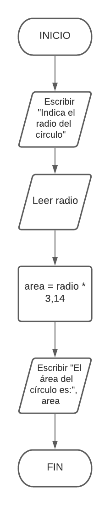
Ejemplo de algoritmo completo:
ALGORITMO CalculoAreaCirculo
VAR
REAL radio = 0.0
REAL area = 0.0
INICIO
ESCRIBIR("Indica el radio del círculo:")
LEER(radio)
area = PI * radio * radio // Suponiendo que PI es una constante ya definida
ESCRIBIR("El área del círculo es: ", area)
FIN
import java.util.Scanner;
public class CalculoAreaCirculo {
public static void main(String[] args) {
Scanner teclado = new Scanner(System.in);
System.out.print("Indica el radio del círculo: ");
double radio = teclado.nextDouble();
double area = Math.PI * Math.pow(radio, 2);
System.out.println("El área del círculo es: " + area);
}
}
5.4 Estructuras Alternativas (Condicionales)
Son las bifurcaciones de nuestro código. Permiten ejecutar un bloque de instrucciones u otro en función de si una condición es verdadera o falsa.
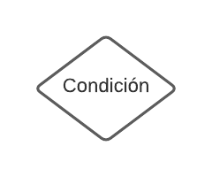
5.4.1 Condicional if (Simple)
Ejecuta un bloque de código solo si la condición es verdadera.
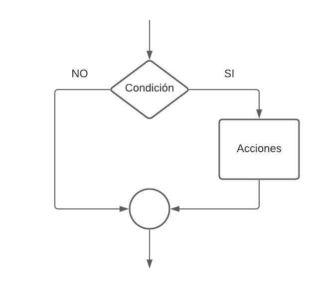
Por ejemplo, queremos definir un algoritmo que solicite una edad al usuario. Si la edad es mayor o igual a 18 indicará por pantalla el texto "Mayor de edad" en caso contrario, no hara nada.
Su diagrama sería el siguiente:
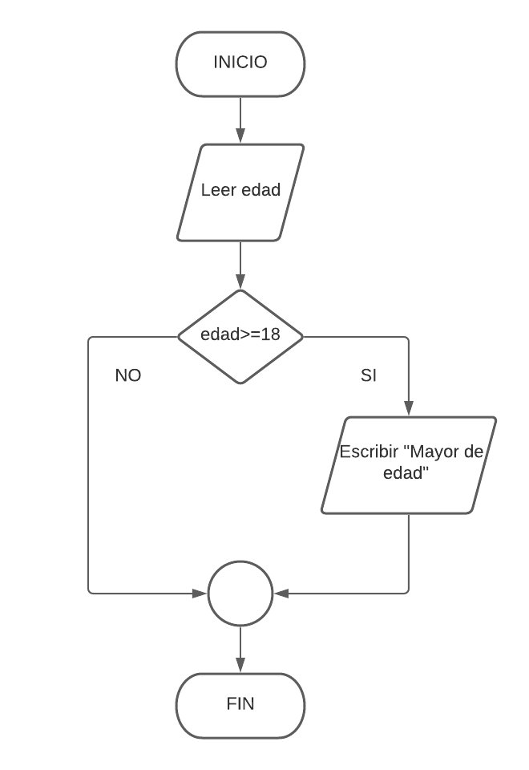
Su pseudocódigo:
ALGORITMO MayoriaEdad
VAR
ENTERO edad
INICIO
ESCRIBIR("Introduce tu edad:")
LEER(edad)
SI (edad >= 18) ENTONCES
ESCRIBIR("Mayor de edad.")
FIN SI
FIN
import java.util.Scanner;
public class MayoriaEdad {
public static void main(String[] args) {
// Inicializamos la variable
int edad = 0;
// Creamos el objeto que nos permite la entrada por teclado
Scanner entrada = new Scanner(System.in);
// Escribimos un mensaja de peticion de edad
System.out.println("Introduce tu edad: ");
// Lectura por teclado de la edad
edad = entrada.nextInt();
// Comprobamos que la edad es mayor o igual a 18
if(edad >= 18) {
System.out.println("Mayor de edad.");
}
}
}
5.4.2 Condicional if-else (Doble)
Proporciona un camino alternativo a ejecutar si la condición es falsa. Es decir, si la condición se evalúa a true ejecuta unas instrucciones y si se evalúa como false ejecuta otras instrucciones.
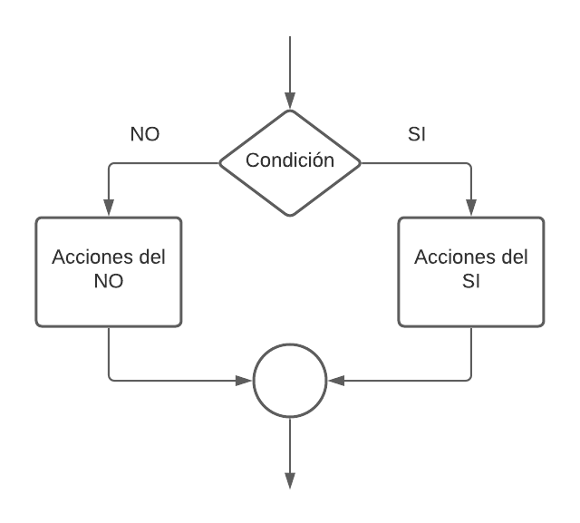
Siguendo con el ejemplo anterior, queremos mostrar por pantalla el mensaje "Eres menor de edad" si la condición es falsa.
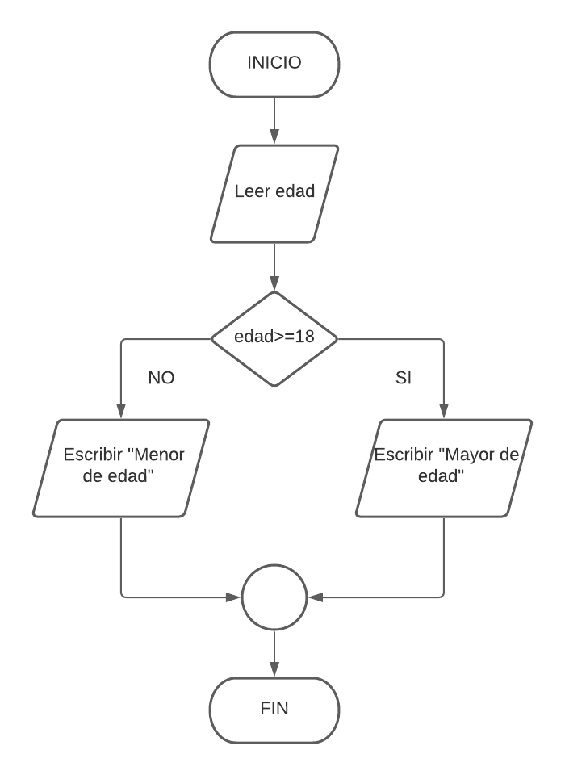
Ejemplo:
ALGORITMO MayoriaEdadDoble
VAR
ENTERO edad
INICIO
ESCRIBIR("Introduce tu edad:")
LEER(edad)
SI (edad >= 18) ENTONCES
ESCRIBIR("Eres mayor de edad.")
SINO
ESCRIBIR("Eres menor de edad.")
FIN SI
FIN
// Sólo mostramos el código modificado
edad = teclado.nextInt();
if (edad >= 18) {
System.out.println("Eres mayor de edad.");
} else {
System.out.println("Eres menor de edad.");
}
5.4.3 Condicional if else-if else (Anidada)
Permite encadenar varias condiciones. El programa evalúa cada condición en orden y ejecuta el primer bloque cuyo resultado sea verdadero.
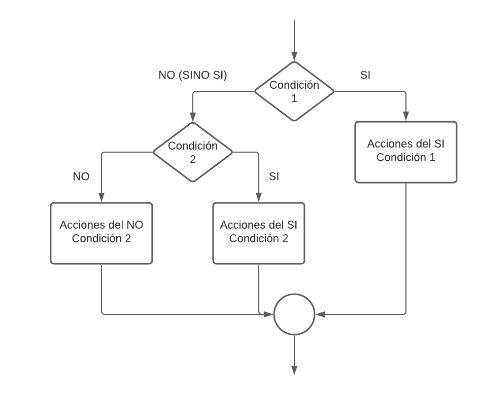
Añadimos una nueva modificacion al algoritmo anterior. Si la edad leída es menor de 6 mostramos "Eres un/a niño/a pequeño/a".
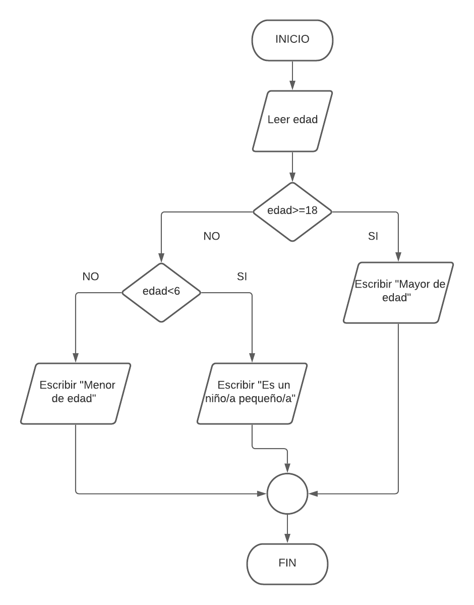
Ejemplo:
ALGORITMO ClasificarEdad
VAR
ENTERO edad
INICIO
ESCRIBIR("Introduce tu edad:")
LEER(edad)
SI (edad >= 18) ENTONCES
ESCRIBIR("Eres mayor de edad.")
SINO SI (edad < 6) ENTONCES
ESCRIBIR("Eres un/a niño/a pequeño/a.")
SINO
ESCRIBIR("Eres menor de edad.")
FIN SI
FIN
edad = teclado.nextInt();
if (edad >= 18) {
System.out.println("Eres mayor de edad.");
} else if (edad < 6) {
System.out.println("Eres una/a niño/a pequeño/a.");
} else {
System.out.println("Eres menor de edad.");
}
Ejemplo Avanzado de Anidación: Condiciones de distinto tipo
Un if anidado no tiene por qué evaluar el mismo tipo de dato. Podemos anidar una comprobación sobre una variable booleana dentro de una comprobación numérica, creando lógicas más complejas.
Ejemplo: Control de acceso a un evento. Un menor de edad solo puede entrar si va acompañado.
ALGORITMO PermisoEntrada
VAR
ENTERO edad
BOOLEANO vieneAcompanado
INICIO
ESCRIBIR("Introduce tu edad:")
LEER(edad)
SI (edad >= 18) ENTONCES
ESCRIBIR("Puedes pasar.")
SINO
ESCRIBIR("Eres menor de edad. ¿Vienes acompañado por un adulto? (VERDADERO/FALSO)")
LEER(vieneAcompanado)
SI (vieneAcompanado == VERDADERO) ENTONCES
ESCRIBIR("Puedes pasar con tu acompañante.")
SINO
ESCRIBIR("Lo sentimos, no puedes pasar sin un acompañante.")
FIN SI
FIN SI
FIN
// Suponiendo 'teclado' como un objeto Scanner ya creado
System.out.print("Introduce tu edad: ");
int edad = teclado.nextInt();
if (edad >= 18) {
System.out.println("Puedes pasar.");
} else {
System.out.print("Eres menor de edad. ¿Vienes acompañado por un adulto? (true/false): ");
boolean vieneAcompanado = teclado.nextBoolean();
if (vieneAcompanado) {
System.out.println("Puedes pasar con tu acompañante.");
} else {
System.out.println("Lo sentimos, no puedes pasar sin un acompañante.");
}
}
5.4.4 Condicional switch (Múltiple)
Es una alternativa al if-else if cuando queremos comparar una única variable con una lista de valores muy concretos.
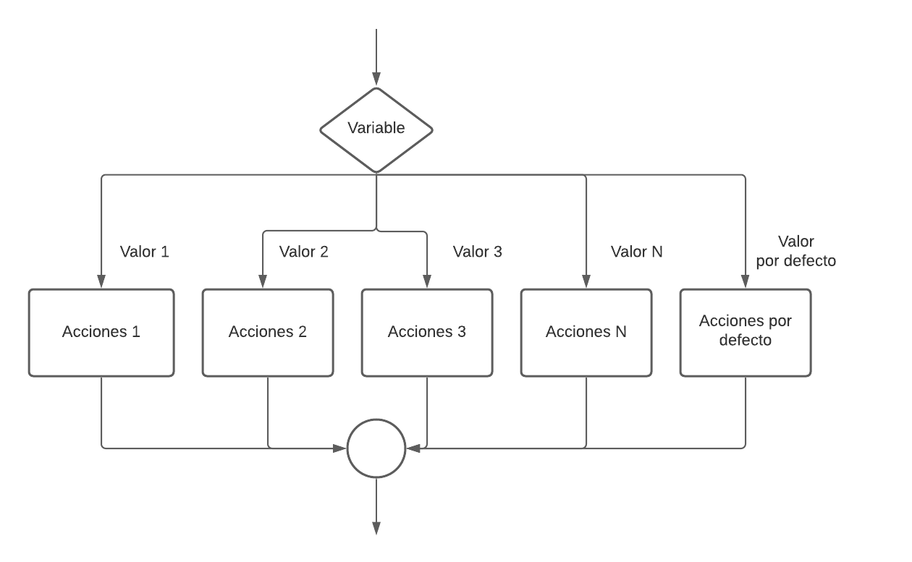
Imaginemos que queremos que usuario inserte una vocal máyuscula y nuestro programa tiene que comprobar qué vocal es. Su diagrama podrías ser este:
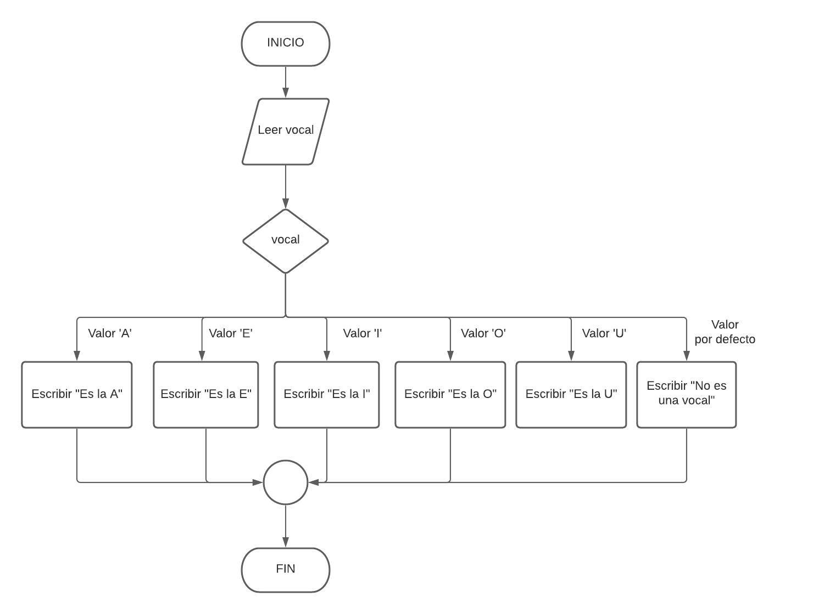
Su pseudocódigo:
ALGORITMO VOCAL
VAR
CARACTER vocal;
INICIO
ESCRIBIR("Dame una vocal: ");
LEER(vocal);
SEGÚN VALOR(vocal):
VALOR 'A': ESCRIBIR("Es la A");
VALOR 'E': ESCRIBIR("Es la E");
VALOR 'I': ESCRIBIR("Es la I");
VALOR 'O': ESCRIBIR("Es la O");
VALOR 'U': ESCRIBIR("Es la U");
DEFAULT: ESCRIBIR("No es una vocal");
FIN SEGÚN
FIN ALGORITMO
Su código en Java:
import java.util.Scanner;
public class Vocal {
public static void main(String[] args) {
// Pedimos la vocal
System.out.println("Dame una vocal: ");
// Creamos el objeto que nos permite la entrada por teclado
Scanner entrada = new Scanner(System.in);
// Definimos la variable
char vocal;
// Lectura por teclado de la vocal. Como la clase scanner no tiene para
// leer un solo caracter pedimos un string y de ese string obtenemos el primer caracter
vocal = entrada.next().charAt(0);
// Definimos el switch
switch (vocal) {
//Case statements
case 'A':
System.out.println("Es la 'A'");
break;
case 'E':
System.out.println("Es la 'E'");
break;
case 'I':
System.out.println("Es la 'I'");
break;
case 'O':
System.out.println("Es la 'O'");
break;
case 'U':
System.out.println("Es la 'U'");
break;
// Valor por defecto
default:
System.out.println("No es una vocal");
break;
}
}
}
Un uso muy típico se da cuando creamos menús con distintas opciones.
Ejemplo:
ALGORITMO MenuOpciones
VAR
ENTERO opcion
INICIO
ESCRIBIR("Elige una opción (1-3):")
LEER(opcion)
SEGUN (opcion) HACER
CASO 1: ESCRIBIR("Has elegido 'Ver perfil'")
CASO 2: ESCRIBIR("Has elegido 'Editar cuenta'")
CASO 3: ESCRIBIR("Has elegido 'Cerrar sesión'")
DE OTRO MODO: ESCRIBIR("Opción no válida.")
FIN SEGUN
FIN
Implementación en Java:
int opcion = teclado.nextInt();
switch (opcion) {
case 1:
System.out.println("Has elegido 'Ver perfil'");
break; // ¡El 'break' es crucial! Sin él, seguiría ejecutando los siguientes casos.
case 2:
System.out.println("Has elegido 'Editar cuenta'");
break;
case 3:
System.out.println("Has elegido 'Cerrar sesión'");
break;
default: // Se ejecuta si ningún 'case' coincide.
System.out.println("Opción no válida.");
break;
}
5.5 Estructuras Repetitivas (Bucles)
Son las rotondas de nuestro código. Permiten repetir un bloque de instrucciones múltiples veces.
5.5.1 Bucle while (Mientras)
Repite un bloque de código mientras una condición sea verdadera. La condición se comprueba antes de cada vuelta, por lo que podría no ejecutarse nunca si la condición es falsa desde el principio.
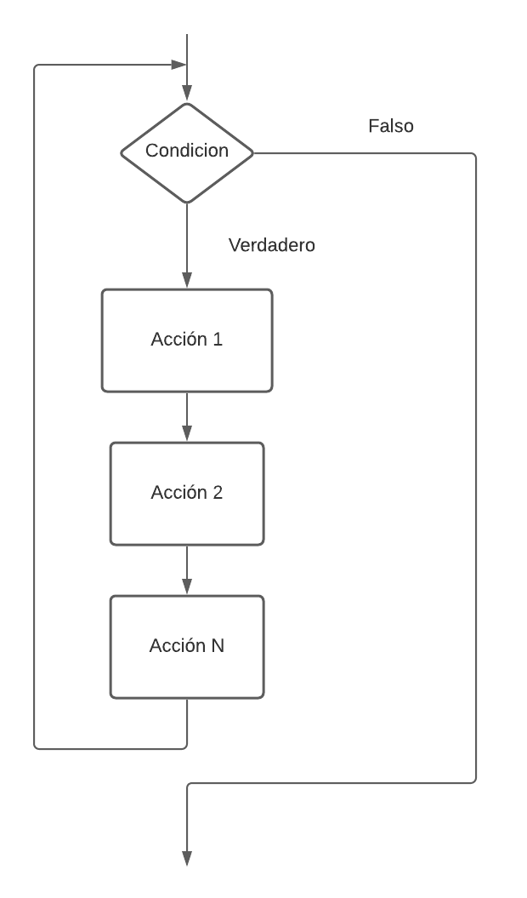
¿Cuándo usarlo? Cuando no sabemos exactamente cuántas veces se repetirá el bucle, pero sí la condición para que siga.
Ejemplo: Tabla de multiplicar. Queremos que el usuario introduzca un número y nos muestre por pantalla su tabla de multiplicar (por ejemplo, la del 5):
5 x 0 = 0
5 x 1 = 5
5 x 2 = 10
5 x 3 = 15
5 x 4 = 20
5 x 5 = 25
5 x 6 = 30
5 x 7 = 35
5 x 8 = 40
5 x 9 = 45
5 x 10 = 50
Seguiremos el siguiente diagrama, fíjate que utilizamos una variable llamada contador que se irá incrementando en cada vuelta (iteración) del bucle.
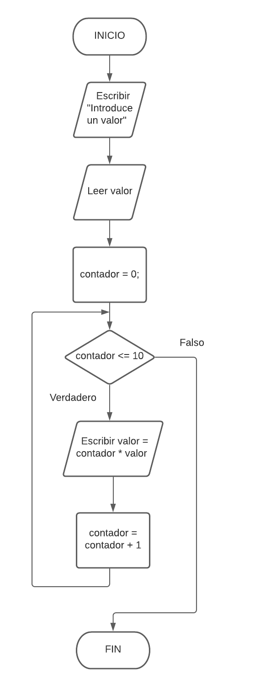
ALGORITMO TablaMultiplicarWhile
VAR
ENTERO numero, i = 0
INICIO
ESCRIBIR("Introduce un número:")
LEER(numero)
MIENTRAS (i <= 10) HACER
ESCRIBIR(numero, " x ", i, " = ", (numero * i))
i = i + 1
FIN MIENTRAS
FIN
int numero = teclado.nextInt();
int i = 0;
while (i <= 10) {
System.out.println(numero + " x " + i + " = " + (numero * i));
i++; // Abreviatura de i = i + 1
}
5.5.2 Bucle do-while (Hacer-Mientras)
Similar al while, pero con una diferencia clave: la condición se comprueba después de cada vuelta. Esto garantiza que el bloque de código se ejecute al menos una vez.
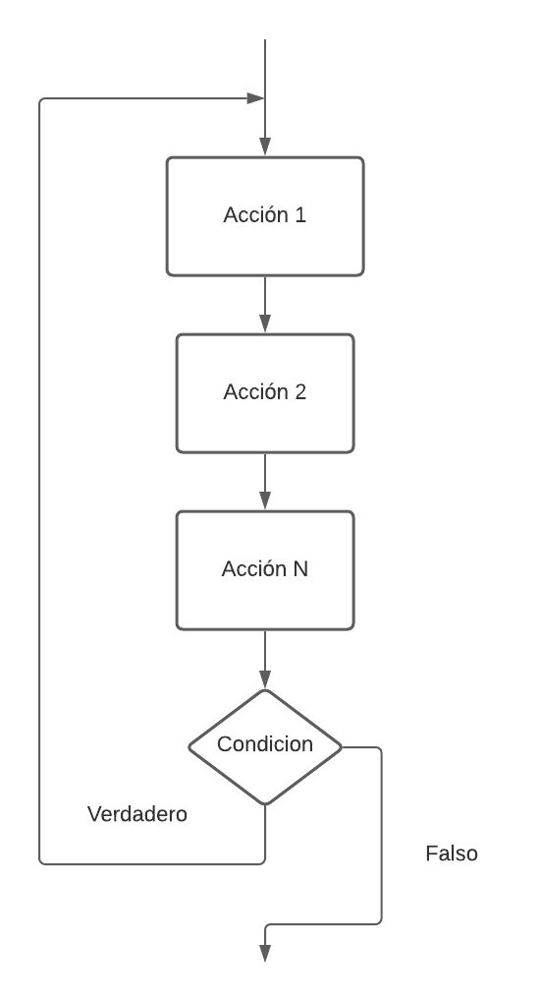
¿Cuándo usarlo? Es perfecto para menús o validaciones, donde quieres que la acción se realice al menos una vez antes de comprobar si hay que repetirla.
Ejemplo: Pedir un número positivo.
ALGORITMO PedirNumeroPositivo
VAR
ENTERO numero
INICIO
HACER
ESCRIBIR("Introduce un número positivo:")
LEER(numero)
MIENTRAS (numero <= 0)
FIN
int numero;
do {
System.out.print("Introduce un número positivo: ");
numero = teclado.nextInt();
} while (numero <= 0);
System.out.println("Número introducido correcto: " + numero);
5.5.3 Bucle for (Para)
Es el bucle ideal cuando sabemos de antemano el número exacto de repeticiones. Compacta en una sola línea la inicialización del contador, la condición de fin y el incremento.
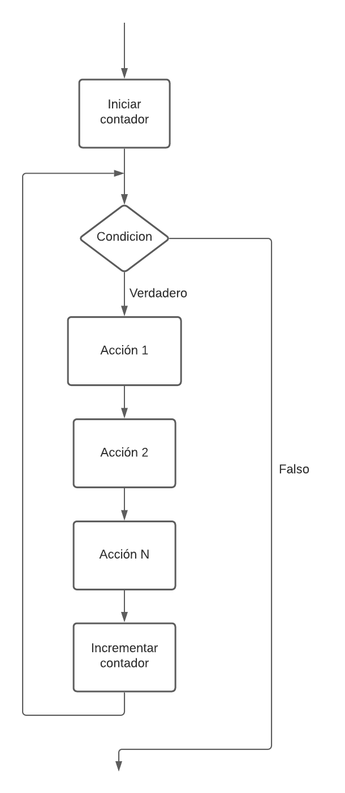
¿Cuándo usarlo? Para recorrer arrays, tablas de multiplicar, o cualquier tarea que se deba hacer un número fijo de veces.
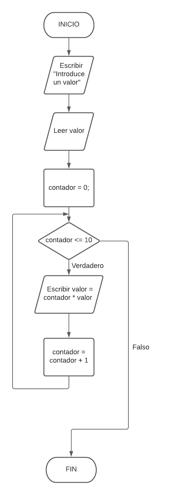
Ejemplo: Tabla de multiplicar (versión for).
ALGORITMO TablaMultiplicarFor
VAR
ENTERO numero, i
INICIO
ESCRIBIR("Introduce un número:")
LEER(numero)
PARA i DESDE 0 HASTA 10 CON PASO 1 HACER
ESCRIBIR(numero, " x ", i, " = ", (numero * i))
FIN PARA
FIN
int numero = teclado.nextInt();
// for (inicialización; condición; incremento)
for (int i = 0; i <= 10; i++) {
System.out.println(numero + " x " + i + " = " + (numero * i));
}
6 Elementos Auxiliares: Nuestras Herramientas Especializadas
Dentro de los bucles, es común usar variables con roles muy específicos. Darles un "apodo" nos ayuda a entender su función al instante.
- Contadores: Cuentan sucesos, normalmente incrementando de uno en uno. Ejemplos
i, j, contador, contAnalogía: El portero de una discoteca que pulsa un contador cada vez que entra una persona. - Acumuladores (o Sumadores): Acumulan un total sumando cantidades variables. Ejemplos
suma, total, acumulado. Analogía: El carrito de la compra donde vas añadiendo productos con precios diferentes. - Interruptores (o Banderas/Flags): Variables
booleanque actúan como un interruptor de luz (true/false). Se usan para "recordar" si un evento ha ocurrido. Ejemplosend, fin, haTerminado, salir.Analogía: Una bandera que se levanta para señalar que se ha encontrado lo que se buscaba.
7 Vectores y Matrices: Almacenando Datos en Colección
Hasta ahora, cada variable guardaba un solo dato. Pero, ¿y si necesitamos guardar las notas de 30 alumnos? ¿O los precios de 100 productos? Para eso usamos los arrays (vectores y matrices).
7.1 Vectores (Arrays Unidimensionales)
Un vector (array) es una estructura que almacena un conjunto de datos del mismo tipo en posiciones de memoria contiguas.
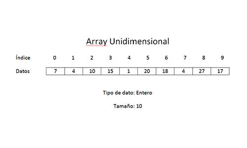
Analogía: Piensa en un tren. El tren entero es el vector. Cada vagón es un elemento que guarda un dato, y el número del vagón es su índice. ¡Importante! El primer vagón es siempre el número 0.
Declaración en Java:
int[] notas = new int[30]; // Un "tren" para 30 notas enteras
String[] nombres = new String[30]; // Un "tren" para 30 nombres
notas[0] = 7; // Asignamos un 7 a la primera nota (vagón 0)
System.out.println(nombres[2]); // Mostramos el nombre del tercer alumno (vagón 2)
for son el compañero perfecto para recorrer vectores:
// Pedir las 30 notas por teclado
for (int i = 0; i < notas.length; i++) {
System.out.print("Introduce la nota del alumno " + (i + 1) + ": ");
notas[i] = teclado.nextInt();
}
Declaración e Inicialización Directa
Si ya conocemos los valores que va a contener nuestro vector, podemos declararlo e inicializarlo en un solo paso. Esto es muy práctico para listas de datos que no cambian, como los días de la semana.
Ejemplo: Crear un vector con los días de la semana y mostrarlo.
public class DiasSemana {
public static void main(String[] args) {
// Declaramos e inicializamos el vector en un solo paso
String[] dias = {"Lunes", "Martes", "Miércoles", "Jueves", "Viernes", "Sábado", "Domingo"};
System.out.println("Los días de la semana son:");
// Recorremos el vector para mostrar su contenido
for (int i = 0; i < dias.length; i++) {
System.out.println("- " + dias[i]);
}
}
}
Caso de Uso 1: Acumulador - Calcular el total de una cesta de la compra
Este es un ejemplo clásico. Usamos un vector para guardar los precios de varios productos y un acumulador para obtener el total.
Pseudocódigo:
ALGORITMO CestaCompra
VAR
REAL precios[5]
REAL total = 0.0
ENTERO i
INICIO
// Llenamos el vector con los precios
PARA i DESDE 0 HASTA 4 CON PASO 1 HACER
ESCRIBIR("Introduce el precio del producto ", i + 1, ":")
LEER(precios[i])
FIN PARA
// Recorremos el vector y acumulamos el total
PARA i DESDE 0 HASTA 4 CON PASO 1 HACER
total = total + precios[i]
FIN PARA
ESCRIBIR("El total de la compra es: ", total)
FIN
double[] precios = new double[5];
double total = 0.0;
Scanner teclado = new Scanner(System.in);
// Llenamos el vector
for (int i = 0; i < precios.length; i++) {
System.out.print("Introduce el precio del producto " + (i + 1) + ": ");
precios[i] = teclado.nextDouble();
}
// Recorremos y acumulamos
for (int i = 0; i < precios.length; i++) {
total = total + precios[i];
}
System.out.println("El total de la compra es: " + total);
Caso de Uso 2: Vectores Paralelos - Relacionar Nombres y Edades
Los vectores paralelos son dos o más vectores en los que los datos del índice i de un vector están relacionados con los datos del mismo índice i del otro.
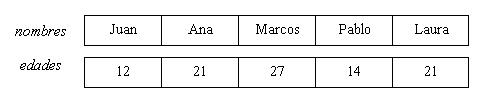
Ejemplo: Cargar 5 nombres y sus edades, y luego mostrar solo los nombres de los mayores de edad.
Pseudocódigo:
ALGORITMO MayoresDeEdad
VAR
CADENA nombres[5]
ENTERO edades[5]
ENTERO i
INICIO
// Llenamos ambos vectores a la vez
PARA i DESDE 0 HASTA 4 CON PASO 1 HACER
ESCRIBIR("Introduce el nombre de la persona ", i + 1, ":")
LEER(nombres[i])
ESCRIBIR("Introduce la edad de ", nombres[i], ":")
LEER(edades[i])
FIN PARA
ESCRIBIR("--- Personas mayores de edad ---")
// Recorremos los vectores para comprobar la condición
PARA i DESDE 0 HASTA 4 CON PASO 1 HACER
SI (edades[i] >= 18) ENTONCES
ESCRIBIR(nombres[i])
FIN SI
FIN PARA
FIN
String[] nombres = new String[5];
int[] edades = new int[5];
Scanner teclado = new Scanner(System.in);
// Llenamos los vectores paralelos
for (int i = 0; i < nombres.length; i++) {
System.out.print("Introduce el nombre de la persona " + (i + 1) + ": ");
nombres[i] = teclado.nextLine(); // Usamos nextLine para nombres completos
System.out.print("Introduce la edad de " + nombres[i] + ": ");
edades[i] = teclado.nextInt();
teclado.nextLine(); // ¡Consumimos el salto de línea fantasma!
}
System.out.println("--- Personas mayores de edad ---");
// Recorremos y mostramos
for (int i = 0; i < nombres.length; i++) {
if (edades[i] >= 18) {
System.out.println(nombres[i]);
}
}
7.2 Matrices (Arrays Bidimensionales)
Una matriz es, sencillamente, un vector de vectores. Permite organizar la información en una tabla con filas y columnas.
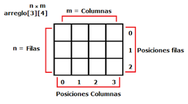
Analogía: Piensa en un tablero de ajerez o una hoja de cálculo. Para localizar una casilla, necesitas dos coordenadas: la fila y la columna.
Declaración en Java:
Acceso a los elementos:tablero[0][0] = 1; // Asignamos un 1 a la casilla de la esquina superior izquierda (fila 0, columna 0)
for anidados: uno para las filas y otro para las columnas.
// Recorrer e imprimir todo el tablero
for (int fila = 0; fila < tablero.length; fila++) {
for (int col = 0; col < tablero[fila].length; col++) {
System.out.print(tablero[fila][col] + " ");
}
System.out.println(); // Salto de línea al final de cada fila
}
Declaración e Inicialización Directa
Además de crear una matriz vacía y llenarla después, si ya conocemos los valores que va a contener, podemos declararla e inicializarla en un solo paso. Esto es muy útil para tener datos de prueba o configuraciones fijas en un programa.
La sintaxis utiliza llaves {} para delimitar la matriz completa y también para cada una de las filas.
Ejemplo: Crear una matriz 3x3 con valores predefinidos.
public class MatrizInicializada {
public static void main(String[] args) {
// Declaramos e inicializamos la matriz en un solo paso
int matriz[][] = {
{1, 4, 7},
{2, 5, 8},
{3, 6, 9}
};
// Ahora podemos usarla, por ejemplo, para mostrarla
System.out.println("--- Matriz Inicializada ---");
for (int i = 0; i < matriz.length; i++) {
for (int j = 0; j < matriz[i].length; j++) {
System.out.print(matriz[i][j] + "\t");
}
System.out.println();
}
}
}
7.3 Lectura y Escritura de Matrices
La tarea más común con las matrices es llenarlas con datos (lectura) y luego mostrarlas (escritura). Para ello, siempre usaremos la misma estructura: dos bucles for anidados. El bucle exterior recorrerá las filas y el interior las columnas.
Ejemplo: Crear una matriz con dimensiones dadas por el usuario, llenarla y mostrarla.
Pseudocódigo:
ALGORITMO GestionMatriz
VAR
ENTERO filas, columnas
ENTERO i, j
INICIO
ESCRIBIR("¿Cuántas filas tendrá la matriz?")
LEER(filas)
ESCRIBIR("¿Cuántas columnas tendrá la matriz?")
LEER(columnas)
// Declaramos la matriz con el tamaño dinámico
ENTERO matriz[filas][columnas]
// Lectura de datos
ESCRIBIR("--- Introduce los valores de la matriz ---")
PARA i DESDE 0 HASTA filas - 1 HACER
PARA j DESDE 0 HASTA columnas - 1 HACER
ESCRIBIR("Introduce el valor para la celda [", i, "][", j, "]:")
LEER(matriz[i][j])
FIN PARA
FIN PARA
// Escritura de datos
ESCRIBIR("--- La matriz resultante es ---")
PARA i DESDE 0 HASTA filas - 1 HACER
PARA j DESDE 0 HASTA columnas - 1 HACER
ESCRIBIR(matriz[i][j], "\t") // \t es un tabulador para alinear
FIN PARA
ESCRIBIR_NUEVA_LINEA()
FIN PARA
FIN
import java.util.Scanner;
public class GestionMatriz {
public static void main(String[] args) {
Scanner teclado = new Scanner(System.in);
System.out.print("¿Cuántas filas tendrá la matriz? ");
int filas = teclado.nextInt();
System.out.print("¿Cuántas columnas tendrá la matriz? ");
int columnas = teclado.nextInt();
// Creamos la matriz con el tamaño que ha dicho el usuario
int[][] matriz = new int[filas][columnas];
// Bucle anidado para LEER y rellenar la matriz
System.out.println("--- Introduce los valores de la matriz ---");
for (int i = 0; i < filas; i++) {
for (int j = 0; j < columnas; j++) {
System.out.print("Introduce el valor para la celda [" + i + "][" + j + "]: ");
matriz[i][j] = teclado.nextInt();
}
}
// Bucle anidado para ESCRIBIR y mostrar la matriz
System.out.println("\n--- La matriz resultante es ---");
for (int i = 0; i < filas; i++) {
for (int j = 0; j < columnas; j++) {
System.out.print(matriz[i][j] + "\t"); // Usamos \t para tabular y alinear
}
System.out.println(); // Salto de línea al terminar cada fila
}
}
}
Caso de Uso: Representar un tablero de Tres en Raya
Un ejemplo perfecto de una matriz es un tablero de juego. Una matriz de 3x3 es ideal para el "Tres en Raya", donde podemos guardar los movimientos de los jugadores ('X' y 'O').
Pseudocódigo:
ALGORITMO TresEnRaya
VAR
CARACTER tablero[3][3]
ENTERO fila, col
INICIO
// 1. Inicializar el tablero con casillas vacías
PARA fila DESDE 0 HASTA 2 HACER
PARA col DESDE 0 HASTA 2 HACER
tablero[fila][col] = '-'
FIN PARA
FIN PARA
// 2. Simular algunos movimientos
tablero[0][1] = 'X'
tablero[1][1] = 'O'
tablero[2][0] = 'X'
// 3. Mostrar el tablero por pantalla
ESCRIBIR("--- TABLERO DE JUEGO ---")
PARA fila DESDE 0 HASTA 2 HACER
PARA col DESDE 0 HASTA 2 HACER
ESCRIBIR(tablero[fila][col], " ") // Escribe la ficha
FIN PARA
ESCRIBIR_NUEVA_LINEA() // Salto de línea al final de la fila
FIN PARA
FIN
public class TresEnRaya {
public static void main(String[] args) {
char[][] tablero = new char[3][3];
// 1. Inicializar el tablero con '-'
for (int fila = 0; fila < 3; fila++) {
for (int col = 0; col < 3; col++) {
tablero[fila][col] = '-';
}
}
// 2. Simular movimientos
tablero[0][1] = 'X';
tablero[1][1] = 'O';
tablero[2][0] = 'X';
// 3. Mostrar el tablero
System.out.println("--- TABLERO DE JUEGO ---");
for (int fila = 0; fila < 3; fila++) {
for (int col = 0; col < 3; col++) {
System.out.print(tablero[fila][col] + " | ");
}
System.out.println(); // Salto de línea para la siguiente fila
}
}
}
8 Strings: La navaja suiza para manejar texto
Un String en Java es un objeto que nos ofrece un montón de métodos útiles para manipular cadenas de texto.
La regla de oro:
equals()para comparar, NO==
variable1 == variable2compara si dos variables apuntan al mismo objeto en memoria.variable1.equals(variable2)compara si los contenidos (el texto) de los dos Strings son iguales.¡Usar
==para comparar el contenido de los Strings es uno de los errores más comunes y difíciles de detectar!
Métodos más útiles de la clase String:
| Método | Descripción |
|---|---|
length() |
Devuelve el número de caracteres (longitud). |
charAt(indice) |
Devuelve el carácter en una posición específica. |
toUpperCase() / toLowerCase() |
Convierte la cadena a mayúsculas o minúsculas. |
substring(inicio, fin) |
Extrae un trozo de la cadena. |
indexOf(texto) |
Busca un texto y devuelve la posición de su primera aparición (-1 si no lo encuentra). |
contains(texto) |
Devuelve true si la cadena contiene el texto especificado. |
replace(viejo, nuevo) |
Reemplaza todas las apariciones de un texto por otro. |
trim() |
Elimina los espacios en blanco al principio y al final. |
split(delimitador) |
Divide la cadena en un array de Strings usando un delimitador. |
Ejemplo práctico: Validar un email simple.
public class StringEjemplo {
public static void main(String[] args) {
String email = " ejemplo@DOMINIO.com ";
// 1. Limpiamos espacios y lo pasamos a minúsculas para unificar
String emailLimpio = email.trim().toLowerCase();
System.out.println("Email limpio: " + emailLimpio); // "ejemplo@dominio.com"
// 2. Verificamos que contenga "@" y termine en ".com"
if (emailLimpio.contains("@") && emailLimpio.endsWith(".com")) {
System.out.println("El formato del email parece correcto.");
// 3. Extraemos el nombre de usuario y el dominio
int posArroba = emailLimpio.indexOf("@");
String usuario = emailLimpio.substring(0, posArroba);
String dominio = emailLimpio.substring(posArroba + 1);
System.out.println("Usuario: " + usuario); // "ejemplo"
System.out.println("Dominio: " + dominio); // "dominio.com"
} else {
System.out.println("Formato de email incorrecto.");
}
}
}